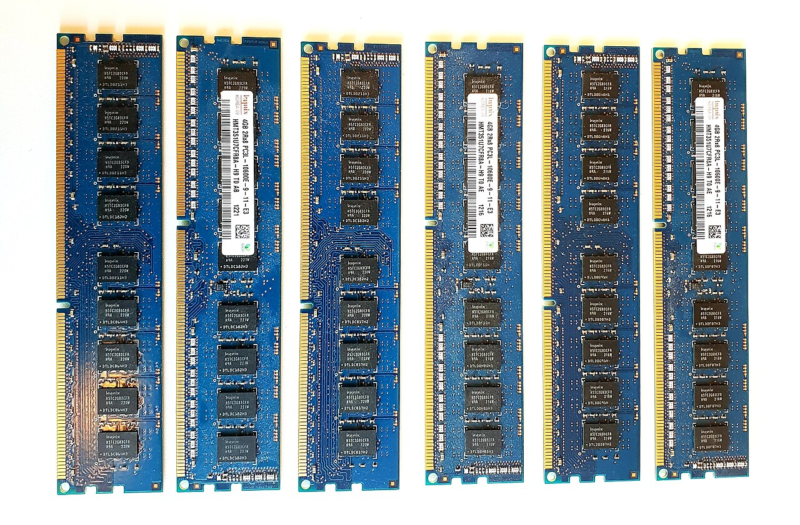
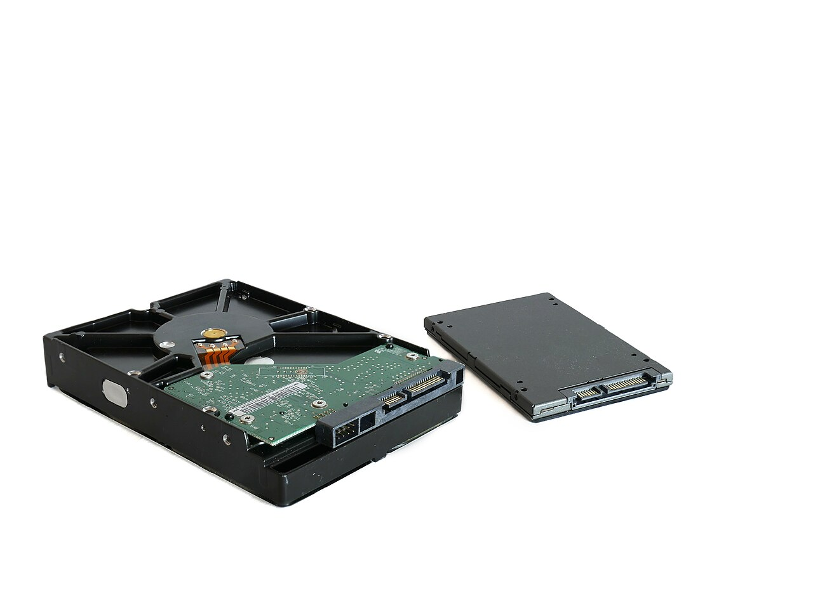
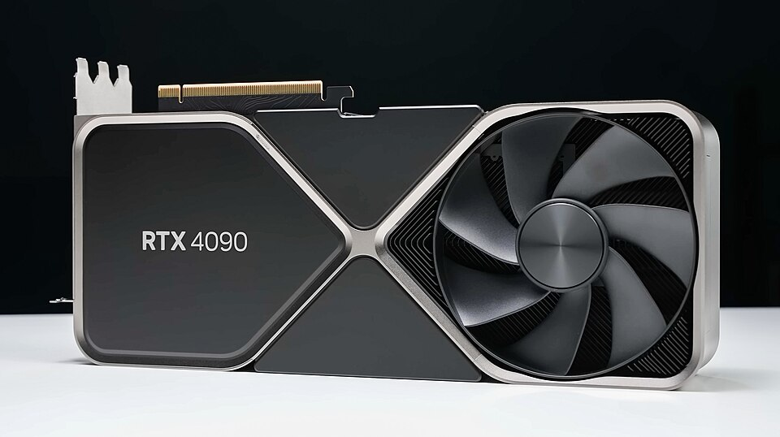

Page 2 · The supply chain
Why are prices rising?
AI does not just run on software. Large AI systems need rows of servers, powerful processors and huge amounts of fast memory. This creates another major customer for the companies that make computer chips.

How AI demand affects PC components
AI data centres need specialised hardware in very large quantities. That can affect how manufacturers use their production capacity and how much memory is available for other customers.
- AI data centres expand.Companies building AI services need more servers to train and run their models.
- Those servers need specialised memory.AI accelerators use high-bandwidth memory (HBM), while the servers also need large amounts of other DRAM and storage.
- Manufacturers prioritise high-demand products.TrendForce reports that suppliers are directing advanced production capacity toward high-performance server products, while PC memory supply remains under pressure. [1]
- PC part prices can rise.When supply is tighter and demand remains strong, the cost of memory and graphics-related components can increase.
Which parts are affected?

System memory
PCs use DRAM for everyday tasks and games. TrendForce forecast conventional DRAM contract prices to rise 10–15% in Q4 2026. [1]

Storage
SSDs use NAND Flash. TrendForce forecast NAND Flash contract prices to rise 15–20% in Q4 2026, although retail changes can differ. [1]

Graphics cards
Graphics cards contain their own memory, called VRAM. TrendForce says GDDR7 supply is limited and AI-chip demand is an important driver. [1]
Complete computers

When memory and storage cost more, PC manufacturers and custom builders may have to raise prices or adjust the parts included in a system. [3]
Does AI explain every price rise?
No. AI demand is an important part of the current memory squeeze, but graphics-card prices can also be affected by product supply, retailer stock, manufacturing costs and how much buyers are willing to pay. It is more accurate to say AI is adding pressure to the market, not that it is the only cause.